5.1 INLEIDING
Conform de eerste versie van de onderzoeksbalans bespreken we in dit hoofdstuk de vindplaatsen per archeoregio. In hoofdstuk 1 werd reeds opgemerkt dat de archeoregio’s, die afgebakend zijn op basis van het huidge landschap, voor het paleolithicum beperkt toepasbaar zijn. Doorheen het paleolithicum is het landschap immers in grote mate gewijzigd. Terwijl voor sommige archeoregio’s wel kan beargumenteerd worden dat ze relevant zijn voor de bespreking van de finaalpaleolithische vindplaatsen (die zich vaak in de top van het vroegholocene landschap situeren), dient zelfs voor die periode opgemerkt te worden dat er binnen de regio’s een grotere complexiteit aanwezig is en het landschap nog ingrijpend veranderde sindsdien, o.m. onder invloed van eolische als alluviale activiteiten.
We brengen het aantal bekende sites in kaart op basis van een kwantitatieve analyse van de CAI. Ook voor deze analyse gelden terug de opmerkingen die we met betrekking tot de voorgaande hoofdstukken hebben geschetst. Om een kwantitatief idee te krijgen van de verdeling van het paleolithische terreinwerk over de verschillende archeoregio’s in Vlaanderen gedurende de laatste 40 jaar, maakte de eerste versie van de onderzoeksbalans voor de periode 1979-2007 opnieuw gebruik van de rapportage in Notae Praehistoricae. In het kader van de actualisatie werd deze bron na 2007 werd aangevuld met gegevens uit de CAI.
5.2 OVERZICHT VAN DE BEKENDE SITES PER ARCHEOREGIO
De verspreiding van de paleolithische sites over de archeoregio’s werd bekeken op basis van de gegevens in de CAI (Figuur 29). Het paleolithicum blijkt daarbij de verhoudingen van het mesolithicum te volgen, met het grootste aantal sites in de Kempen (48 %), gevolgd door de (zand)leemstreek (32 %) en ten slotte de Vlaamse zandstreken (15 %). In de Maasvallei en de duin- en poldergebieden bleven de vondsten voorlopig beperkt in aantal (samen ca. 5 %).
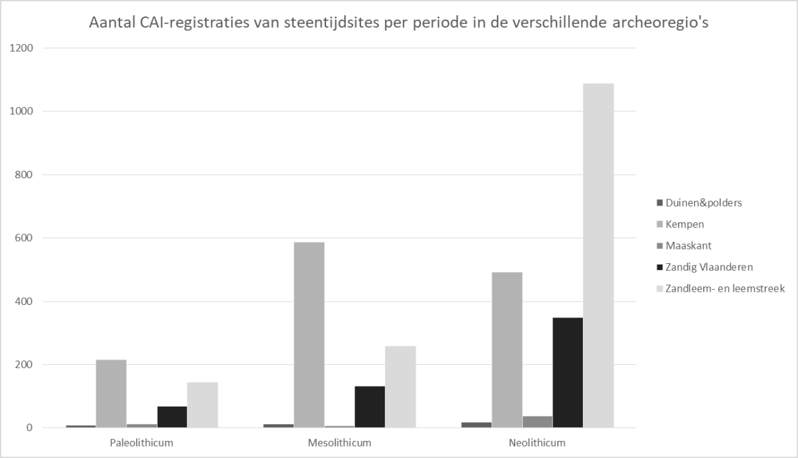
Aantal registraties in de CAI van steentijdsites per periode in de verschillende archeoregio’s.
Het spreekt voor zich dat de kritische opmerkingen over (een deel van) de sites die in de CAI als paleolithicum geregistreerd staan, ook hun weerslag hebben op de waarde van de kaarten. Omdat dit inherent deel uitmaakt van de stand van zaken van het onderzoek en dus in deze balans thuishoort, geven we hier toch verspreidingskaarten van de sites waarin paleolithicum is gemeld.
Hieruit blijkt (Figuur 30) dat deze plaatsen in alle archeoregio’s en over het hele gewest verspreid zijn, waarbij de oostelijke helft wel iets dichter bezaaid lijkt te zijn dan de westelijke. Figuur 31 toont dat ca. 17,5 % van het totaal aantal sites met een paleolithische component niet specifieker dan het paleolithicum gedateerd kunnen worden. Het gaat hierbij hoofdzakelijk om toevalsvondsten zonder of met een beperkte context.
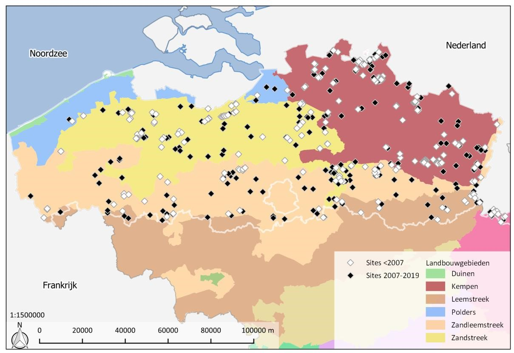
Verspreiding van sites in Vlaanderen waarin volgens de Centrale Archeologische Inventaris paleolithicum gekend is (toestand eind 2019).
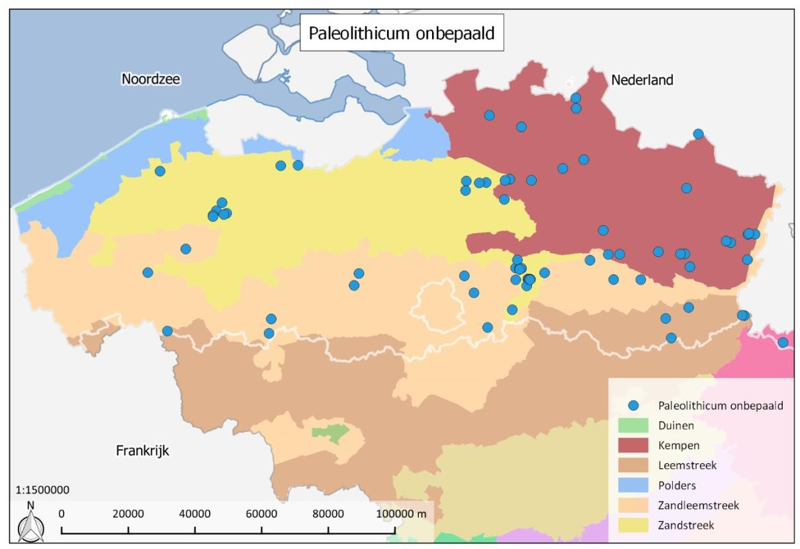
Verspreiding van sites in Vlaanderen waar volgens de Centrale Archeologische Inventaris een algemene datering in het paleolithicum gekend is (toestand eind 2019).
Voor een deel kan de iets densere verspreiding in het oosten verklaard worden door de vermelding van vroegpaleolithische sites in de zuidoostelijke sector van het gewest (Figuur 30). Specifiek gaat het om het zogenaamde ‘Hagelands clactoniaan’. Een revisie van deze vondsten dringt zich echter op.
Sinds de uitgave van de onderzoeksbalans in 2008 zijn enkele nieuwe sites met een vroegpaleolithische component aan het licht gekomen (Figuur 32). Deze bevinden zich terug grotendeels in de oostelijke (zand)leemzone van Vlaanderen. Echter ook bij de recentere vondstmeldingen blijkt de datering van de vondsten problematisch. Vaak gaat het om vuistbijlen (‘Acheuleaan’), dewelke mogelijk ook in het middenpaleolithicum kunnen dateren, of om vondsten die gedateerd worden vanaf het vroegpaleolithicum maar deze datering niet in de CAI als dusdanig is overgenomen. Zoals we eerder vermelden is dit bijvoorbeeld het geval voor de vindplaats Gistel-Steenbakkerstraat die zich op de grens van het kustpoldergebied bevindt.
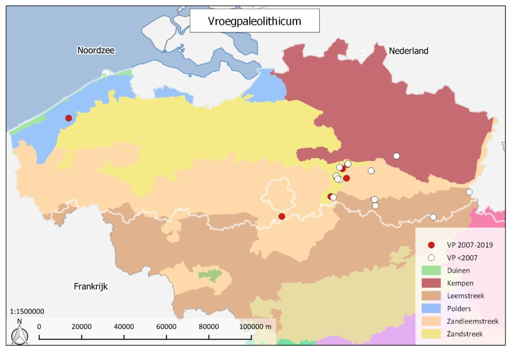
Verspreiding van sites in Vlaanderen waarin volgens de Centrale Archeologische Inventaris vroegpaleolithicum gekend is (toestand eind 2019).
Het aantal sites met middenpaleolithische componenten is sinds 2007 gestegen, en ook qua verspreiding is een ander beeld te zien (Figuur 33). De huidige stand van zaken wijst erop dat deze sites niet enkel vooral in de Kempen en in de (zand)leemstreek gerapporteerd zijn, maar ook in de Vlaamse zandstreken steeds meer voorkomen. In de poldergebieden zijn sites nog steeds niet geattesteerd.
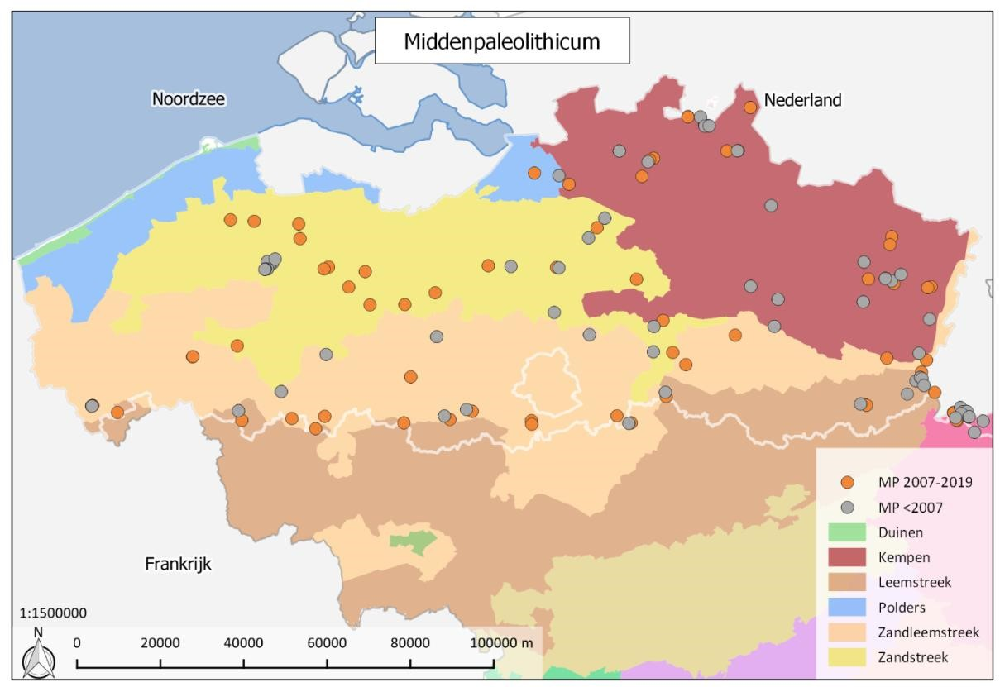
Verspreiding van sites in Vlaanderen waarin volgens de Centrale Archeologische Inventaris middenpaleolithicum gekend is (toestand eind 2019).
De kaart met de verspreiding van de laatpaleolithische sites in Vlaanderen (Figuur 34) is wellicht de meest fictieve kaart en in de eerste plaats een artefact van de onderzoekshistoriek. Vele van de hier gekarteerde plaatsen vinden we trouwens ook terug op de andere kaarten. Onderzoek tussen 2007 en 2019 bracht meerdere vindplaatsen aan het licht, maar zoals we eerder aangaven gaat het voornamelijk om vindplaatsen met een algemene datering vanaf het laatpaleolithicum. Uitspraken over de verspreiding zijn nog steeds moeilijk. De nieuwe sites bevinden zich vaak in de buurt van reeds gekende vindplaatsen, maar deze verspreiding is waarschijnlijker nog steeds onderhevig aan onderzoekshiaten dan dat het een patroon in de activiteit uit het laatpaleolithicum aantoont.
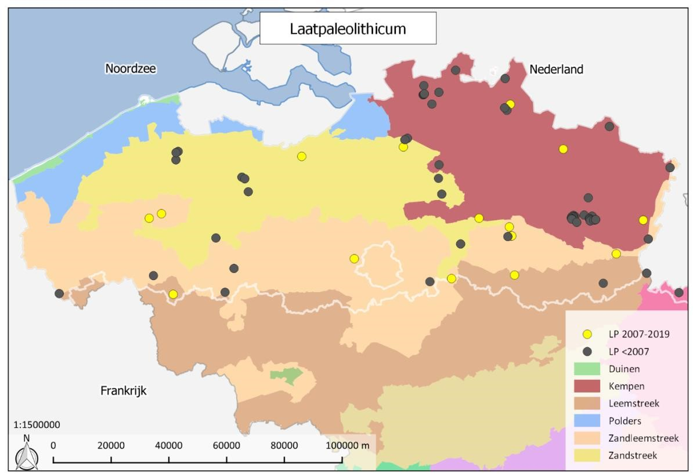
Verspreiding van sites in Vlaanderen waarin volgens de Centrale Archeologische Inventaris laatpaleolithicum gekend is (toestand eind 2019).
Voor het finaalpaleolithicum biedt de verspreidingskaart (Figuur 35) zeker een betere reflectie van de reële aanwezigheid van sites. Ruim 20 jaar aan recent onderzoek leverde voor deze subfase het grootste aantal nieuwe vindplaatsen op. Het verspreidingsbeeld van een dominantie in de Kempen en de Zandstreek lijkt bevestigd. Of dit ook overeenstemt met de archeologische realiteit, staat evenwel nog niet vast. Met name wanneer de Malta-onderzoeken in beschouwing genomen worden, blijkt er een sterke focus te zijn op steentijdverwachting in gebieden waar een podzolbodem voorkomt. Terwijl de aanwezigheid van een podzolbodem inderdaad als indicator kan gebruikt worden voor een goed bewaard bodemprofiel en dus ook gunstig voor de bewaring van artefacten die hierin voorkomen (bijv. finaalpaleolithische en jongere steentijdvindplaatsen), dient omzichtig omgesprongen te worden met de omgekeerde situatie. Steentijdvindplaatsen vanaf het finaalpaleolithicum zijn immers niet enkel geassocieerd met een podzolbodem. En het ontbreken van een podzolbodem hoeft niet altijd te wijzen op een slecht bewaard bodemprofiel. Deze sterke focus op podzolbodems kan deels verklaren waarom de meeste vindplaatsen ook aangetroffen zijn in de regio’s waar dergelijke bodems voorkomen (in se de Kempen en Zandstreek). Voor de Leem- en Zandleemstreek blijkt het vaak lastiger om de bodemgaafheid goed in te schatten. Alhoewel daar ook nog andere verklaringen spelen, zoals bijvoorbeeld de impact van erosie en colluviale processen (zie verder). En voor de Kustpolders en Duinen merken we in het algemeen op dat de aandacht voor steentijdonderzoek heel lang ondermaats is gebleven, ondanks het gegeven dat er onder polderafzettingen een afgedekte, pleistoceen landschap deels bewaard bleef. Terwijl dit voor de polders ter hoogte van de Beneden-Schelde wel werd erkend en leidde tot de ontdekking van vindplaatsen te Doel, Verrebroek – Dok 2 en Beveren – LPW. In het algemeen moet wel rekening gehouden worden dat verschillende locaties ook gebaseerd zijn op loutere vondstmeldingen, zonder grondige evaluatie. In het bijzonder in de (zand)leemstreek zijn weinig betrouwbare sites bekend, alhoewel daar sinds de eerste versie van de onderzoeksbalans enige verandering is in gekomen met o.m. de vindplaatsen Ruien-Rossalinde en Oudenaarde – Markt.
Een samenvatting per regio (Figuur 36) leert dat in de zandstreken van de Kempen en de Vlaamse provincies de finaalpaleolithische sites de middenpaleolithische domineren, terwijl in de (zand)leemstreek de middenpaleolithische sites met een nipte voorsprong het talrijkst zijn.
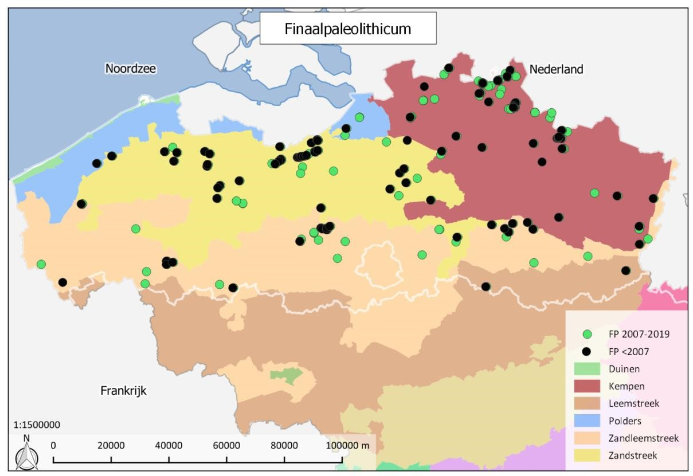
Verspreiding van sites in Vlaanderen waarin volgens de Centrale Archeologische Inventaris finaalpaleolithicum gekend is (toestand eind 2019).
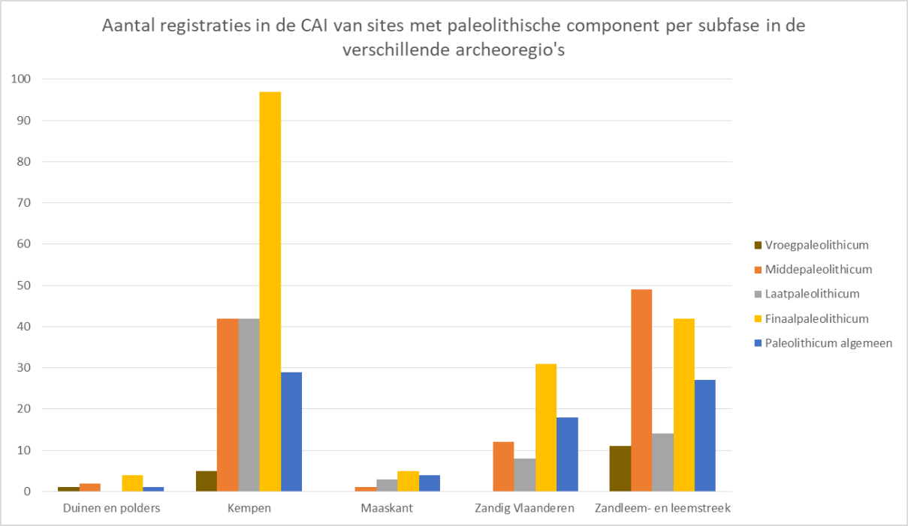
Aantal registraties in de CAI van paleolithische sites per paleolithische fase in de verschillende archeoregio’s.
5.3 HET PALEOLITHISCH POTENTIEEL VAN DE ARCHEOREGIO’S
Zoals hoger al aangehaald hebben actuele archeoregio’s in Vlaanderen niet noodzakelijk betekenis als landschappelijke parameters voor middenpaleolithische bewoning. Veel belangrijker zijn in dat verband paleolandschappelijke eenheden. Anderzijds hebben deze archeoregio’s in het pleistoceen wel allemaal hun eigen dynamiek gekend en bieden ze daardoor verschillende tref- en bewaringskansen voor middenpaleolithicum.
Zo wordt Laag-België gedomineerd door de Vlaamse Vallei en haar zijrivieren. Deze vallei is het resultaat van afwisselende erosie- en opvullingsfases vanaf de Saale1. Binnen de opgevulde vallei is er potentieel aanwezig voor goed bewaarde contexten die omwille van de geomorfologische evolutie van deze vallei voornamelijk dateren vanaf het laatpleistoceen2. Over het algemeen bevinden deze niveaus zich onder een dik pakket sedimenten die tijdens het pleniglaciaal en laatglaciaal werden afgezet en kunnen ze enkel bij diepe ingrepen aan het licht komen. Bovendien hebben de opeenvolgende erosieve fases in belangrijke mate oudere niveaus weggevaagd en/of herwerkt. Dat betekent echter niet dat er geen goed bewaarde vindplaatsen meer aangetroffen kunnen worden. Zo blijkt bijvoorbeeld de impact van de getijdengeulen tijdens het Eem weliswaar voor een groot deel de eerder afgezette fluviatiele sedimenten weggewerkt te hebben, maar bleef deze impact beperkt ten zuiden van Gent en ter hoogte van enkele meer beschermde zones. De daaropvolgende insnijding tijdens de vroege Weichsel zorgde op zijn beurt voor de erosie van de Eemopvulling, maar ook nu weer bleven lokaal nog oudere sedimenten gevrijwaard3. In welke mate deze niet-geërodeerde afzettingen vindplaatsen herbergen, vormde tot op heden nog niet het onderwerp van systematisch onderzoek. Dit met uitzondering van het reeds vermelde onderzoek door de KU Leuven ter hoogte van de oostelijke uitlopers van de Vlaamse vallei4. Buiten deze regio kunnen we enkel terugvallen op een beperkt aantal oudere vondstmeldingen en onderzoeken die weliswaar getuigen van een rijk potentieel, maar waarbij informatie rond de chronostratigrafische context beperkt is (bijv. Gent-Port Arthur en Uitbergen – Groeve Maes,5 zie bespreking verder in de tekst). Een recent, beperkt onderzoek in het westen van de Vlaamse vallei werd uitgevoerd ter hoogte van de groeve te Oekene Rennevoordestraat6. In dit licht vermelden we tevens dat er sporadisch melding wordt gemaakt van oudere afzettingen tijdens archeologisch onderzoek gericht op jongere periodes, zoals de restanten van een Eem-wadgebied die in de Ver-Assebroekse meersen bij het onderzoek naar een middeleeuws kasteel werden gekarteerd en er geassocieerd is met enkele verspreide vondsten7, evenals een aantal onderzoeken in de regio van Maldegem waar een mogelijk Eemniveau werd aangetroffen, maar geen verdere evaluatie naar het steentijdpotentieel werd uitgevoerd8.
Buiten de Vlaamse vallei is het middenpaleolithicum in zandig en zandlemig Vlaanderen vooral gekend aan de hand van tal van oppervlaktevindplaatsen die zich vaak op dagzomende tertiaire opduikingen bevinden waar het in oorsprong dun kwartair dek geërodeerd is9. Ook voor de vindplaatsen die zich op de getuigenheuvels van het Heuvelland en de Vlaamse Ardennen bevinden, geldt deze problematiek. Ze bevinden zich over het algemeen aan het oppervlak of zijn gevangen in verplaatste sedimenten, zoals bijv. te Vollezele-Congoberg waar het materiaal zich in colluviale afzettingen uit het Weichsel bevindt240.
Ten noorden van de Vlaamse Vallei, ter hoogte van de Kempen, kenmerken sites zich vooral aan de hand van oppervlaktevindplaatsen met een beperkt aantal vondsten. Onderzoek in het gebied van de Liereman heeft echter ook voor dat gebied het potentieel aangetoond voor beter bewaarde, afgedekte vindplaatsen10.
Het zandleem- en leemgebied van midden-België biedt dan weer potentieel op in situ bewaarde contexten, zoals het onderzoek op de diverse sites te Veldwezelt en Kesselt heeft aangetoond11. Maar ook daar zijn vindplaatsen door de afdekking van een dik pakket (zand)leem weinig zichtbaar. Ze getuigen van het bijzonder rijk potentieel dat aanwezig is in het loessgebied zowel voor alle fases van het middenpaleolithicum. Wat overigens ook aangetoond wordt aan de hand van goed bewaarde en gedocumenteerde vindplaatsen in Nederland (bijv. Maastricht-Belvédère12) en Wallonië (zoals Remicourt – En Bia Flo I13). Onderzoek net over de taalgrens, langs de Kleine Gete14, toont overigens aan dat ook ondiep bewaarde vindplaatsen in de beekvalleien kunnen aangetroffen worden.
In de kustpolders ontbreken vindplaatsen. In principe verschilt het middenpaleolithisch potentieel weinig van het zand(leem)gebied net ten westen ervan, maar zorgt de holocene geomorfologische ontwikkeling van het landschap hier voor een extra complexiteit omwille van de afdekking door veen en polderklei enerzijds en erosieve werking van getijdengeulen anderzijds. Op de huidige kaart wordt de kustlijn als begrenzing aangegeven, maar voor het paleolithicum gaat deze begrenzing uiteraard niet op. Terwijl tijdens koudere periodes de kustlijn verderaf lag of zelfs helemaal niet bestond, getuigen mariene afzettingen uit het Eem landinwaarts net van een omgekeerde beweging tijdens het interglaciaal. Onderzoek naar het potentieel van het pleistocene landschap ter hoogte van de litorale en sublitorale zones bleef echter lange tijd uit in België. Ter hoogte van het strand zijn weliswaar enkele vindplaatsen gekend, maar het betreffen voornamelijk oude vondstmeldingen waarvan het materiaal ondertussen deels verloren is gegaan. Deze collecties zijn niet opgenomen in de CAI. Ter hoogte van het strand van Walraversijde is materiaal aangetroffen dat onlangs werd geherevalueerd en deels in het finaalpaleolithicum kan geplaatst worden. Voor het middenpaleolithicum blijken vooralsnog enkel faunaresten gerapporteerd te zijn die op diverse locaties voor de kust zijn aangetroffen15. Dit staat in schril contrast met de rijkdom aan vondsten voor de kust van Nederland waar naast talrijke lithische en benen artefacten en faunaresten, ook een schedelfragment van een Neanderthaler werd gevonden16. Voor de Belgische sector wijst Pieters in zijn recent overzicht op een mogelijke relatie tussen de vondstlocaties en de aanwezigheid van verschillende opgevulde, pleistocene paleovalleien, die naar analogie van de Vlaamse vallei, aldus een bijzonder rijk onderzoekspotentieel bieden17.
Ook voor het laat- en finaalpaleolithicum is het onderscheid in verschillende archeoregio’s ook vooral in die zin relevant. De variatie in sedimenten, topografie en historisch landgebruik zorgen er immers voor duidelijke verschillen in bewaringstoestand en vondstkansen.
In de Maasvallei bieden laatglaciale duinen en oeverwallen nabij de pleistocene Maasbedding duidelijk potentieel op de aanwezigheid van federmessersites, zoals in Rekem is gebleken18. De bewaring ervan hangt af van latere eolische of alluviale afdekking en recent landgebruik. Ook aan de voet van het Kempisch Plateau kunnen sites bewaard zijn (Opgrimbie19). Voorlopig zijn in de Maasvallei nog weinig sites echt bekend. Gerichte prospectie is hier pas zinvol na gedetailleerd paleolandschappelijk onderzoek.
Voor de Kempen is er in de zandcontexten en omwille van het relatief vlakke terrein sinds het laatglaciaal weinig watererosie en –sedimentatie. Finaalpaleolithische sites zijn er daardoor bij het huidige oppervlak of in het geval van jonge dryaszanden in vrij ondiepe toestand begraven. Dit maakt ze toegankelijker voor onderzoek, maar ook kwetsbaar voor processen van bioturbatie en verploeging. Begraven finaalpaleolithische sites geassocieerd met een paleobodem zijn er geattesteerd te Arendonk/Oud-Turnhout in het het landschap De Liereman20 en langs de Molse Nete te Lommel21. Op deze locaties zijn uitgestrekte sitecomplexen uit het finaalpaleolithicum en mesolithicum waarin zowel afgedekte als oppervlaktevindplaatsen voorkomen. Oppervlaktesites zijn talrijker. Door de arme Kempische bodem zijn er nog steeds zones over in bos- en heidegebieden (de vroegere zogenaamde woeste gronden) waar de sites in de (podzol)bodem goed bewaard zijn. Zelfs in de jongere landbouwontginningen kunnen de ensembles nog duidelijk geconcentreerd aanwezig zijn (cf. Weelde- Eindegoorheide22). In beide gevallen kunnen ze wel vermengd geraakt zijn met latere mesolithische occupaties (cf. Meer II23) en zijn er door de droge zure bodems nauwelijks bewaringskansen voor organisch materiaal. Er is daarom geen informatie over de organische component van de materiële cultuur en ook goede dateringsmogelijkheden zijn gelimiteerd. Het moet ook gezegd dat de druk op de ruimte enorm blijft en mogelijke goed bewaarde contexten in snel tempo verdwijnen24.
Paleolithische vondsten in alluviale context zijn in de Kempen voorlopig nog beperkt, maar het onderzoek in de vallei van de Kleine Nete (Nijlen-Varenheuvel25) heeft aangetoond dat ook deze gebieden onderzoeksperspectieven bieden.
Voor Zandig Vlaanderen geldt in enige mate ook wat al voor de Kempen is aangehaald, alleen is hier heel wat minder oppervlakte buiten landbouw gebleven en zijn de landbouwactiviteiten ook veel intenser geweest. Niettemin zijn ook hier enkele ongestoorde finaalpaleolithische sites opgegraven, zoals te Klein-Sinaai26 en in Adegem-Berlaars (opgraving Vanmoerkerke27). Alleen al in de Scheldevallei zijn minstens 30 federmesservindplaatsen gekend28. Op basis van onderzoek in de Scheldevallei en Moervaart stelt Crombé dat federmessergroepen in deze regio een voorkeur hadden voor de droge oevers van meren en vennen en de grote riviervalleien leken te vermijden.29 Dat wijkt enigszins af van wat we zien in de andere regio’s (bijv. het hierboven vermelde Rekem ligt langs een oude Maasarm) en in het buitenland (zie verder).
De laatste decennia is er intensief steentijdonderzoek gebeurd in de Scheldevallei. Met betrekking tot het laatglaciaal zijn vooral onderzoeksresultaten geboekt in de Beneden-Schelde. Voornamelijk vanuit academische hoek en het toenmalige VIOE werd sinds het einde van de 20ste eeuw gestart met onderzoek naar de riviervalleien, wat resulteerde tot tal van afgedekte vondstlocaties langs de Schelde en de zijrivieren30. Zo zijn er in het Waasland onder de Scheldepolders bij de uitbreiding van het havengebied al op verschillende locaties goed bewaarde finaalpaleolithische sites aangetroffen en onderzocht, zoals te Verrebroek-Dok 2, Doel31 en Beveren - LPW263. Organisch materiaal bewaard in een natte context ontbreekt er voorlopig nog, de vernatting van de poldergebieden kwam voor het finaalpaleolithicum te laat, maar dit biedt zeker perspectieven voor toekomstig onderzoek vooral voor de recentere steentijd. Vanwege hun doorgaans diepe ligging zijn deze poldersites iets moeilijker te
prospecteren dan in de Kempen (er is uitgebreid paleolandschappelijk onderzoek nodig), maar ze zijn er in principe wel beter bewaard.
Systematische oppervlaktekartering door een aantal amateur-archeologen heeft geleid tot de ontdekking van tal van vindplaatsen die zich voornamelijk op dekzandruggen bevinden32. Deze zijn vaak aangeploegd. Een uitgestrekt sitecomplex is bijvoorbeeld aangetroffen in en langs de Moervaartvallei33. Mogelijk is rond de depressie te Ver-Assebroek een gelijkaardig patroon aanwezig34. Opmerkelijk zijn ook enkele oudere vondsten op de westelijke rand van de zandstreek nabij Brugge35.
Recent onderzoek toont ook de aanwezigheid aan van vindplaatsen die afgedekt zijn met eolisch of colluviaal materiaal zoals te Ruien-Rosalinde36 en Oudenaarde-Markt37.
Voor de kustpolders, mariene duingebieden en submariene gebieden geldt dezelfde vaststelling als voor het middenpaleolithicum. Het potentieel voor steentijdvindplaatsen werd hier lange tijd niet onderkend, noch vanuit academische hoek, noch in het kader van preventief archeologisch onderzoek. Zoals hierboven vermeld leidde te herevaluatie van vuursteenmateriaal dat ter hoogte van het strand van Raversijde werd ingezameld midden de 20ste eeuw tot de identificatie van enkele federmesserspitsen38 Ook voor deze periode contrasteert het gebrek aan vondsten met de situatie in de buurlanden39.
In tegenstelling tot de zandstreken zijn de lemige gebieden wel zwaar onderhevig geweest aan watererosie, mede onder invloed van de intensieve landbouw. In de zandleemstreek zijn door erosie van plateauranden en hellingen ongetwijfeld heel wat sites verdwenen of diep begraven. Onze kennis van het finaalpaleolithicum in het Hageland is voorlopig beperkt tot siterestanten die in de ploeglaag zijn achtergebleven (bijv. Assent-Luienberg40). In de Leemstreek is de toestand nog dramatischer en zijn op de toppen en hellingen vaak meters sediment verdwenen, terwijl lagere delen diep onder colluvium zitten. ‘Sites’ zijn hier maar geïsoleerde vondsten (bijv. Tjongerspits in Bierbeek41). Bijzonder was dan ook de ontdekking en opgraving van de finaalpaleolithische site in Tongeren - Plinius in 200642. Hoewel de lokale geografische context op deze plaats wat specifiek is, opent het zeker perspectieven voor nieuw onderzoek in deze regio. Een speciale vermelding verdient hier uiteraard ook de laatpaleolithische site in Kanne, voorlopig de enige opgegraven magdaleniaansite in het Vlaamse Gewest43, maar die wel aansluiting vindt bij de site van Orp in Waals Brabant44 en de sites in het Nederlandse loessgebied277. In hoeverre hiervan in de toekomst meerdere voorbeelden gevonden kunnen worden, blijft voorlopig moeilijk inschatten. Ondanks enige waakzaamheid zijn er de voorbije 40 jaren nauwelijks signalen in deze richting. In ieder geval zitten deze sites aan de meest noordelijke uitbreiding van het magdaleniaan in West-Europa en blijft het een uitdaging om in Vlaanderen meer vindplaatsen uit deze periode te kunnen onderzoeken.
5.4 EVOLUTIE VAN HET TERREINWERK IN DE ARCHEOREGIO’S
Zeer opvallend hierbij is de dominantie aan finaalpaleolithisch terreinwerk: zowel in de Kempen, de Maasvallei als Zandig Vlaanderen is dit de grootste categorie (Figuur 37). In de (zand)leemstreek is er nog een licht overwicht aan middenpaleolithisch terreinwerk. Er moet natuurlijk wel rekening gehouden worden dat de variërende bewarings- en trefkansen van sites in deze verschillende regio’s, zoals hierboven besproken, effect hebben op deze cijfers.
De stijging van het aantal terreincampagnes in Zandig Vlaanderen heeft te maken met verschillende recente opgravingen (Klein-Sinaai, Maldegem, Verrebroek, Doel, Gent), en bovendien was deze regio het toneel van heel wat prospectief onderzoek waarin ook het finaalpaleolithicum aan bod kwam, zoals het grootschalige onderzoek in de Moervaartdepressie en het Waasland. In de kustpolders en het duingebied langs de kust ontbreken paleolithische terreincampagnes helemaal. Terwijl het potentieel voor de Scheldepolders wel al langer onderkend wordt en dit potentieel ook in de preventieve archeologie wordt meegenomen (bijv. Beveren-LPW).
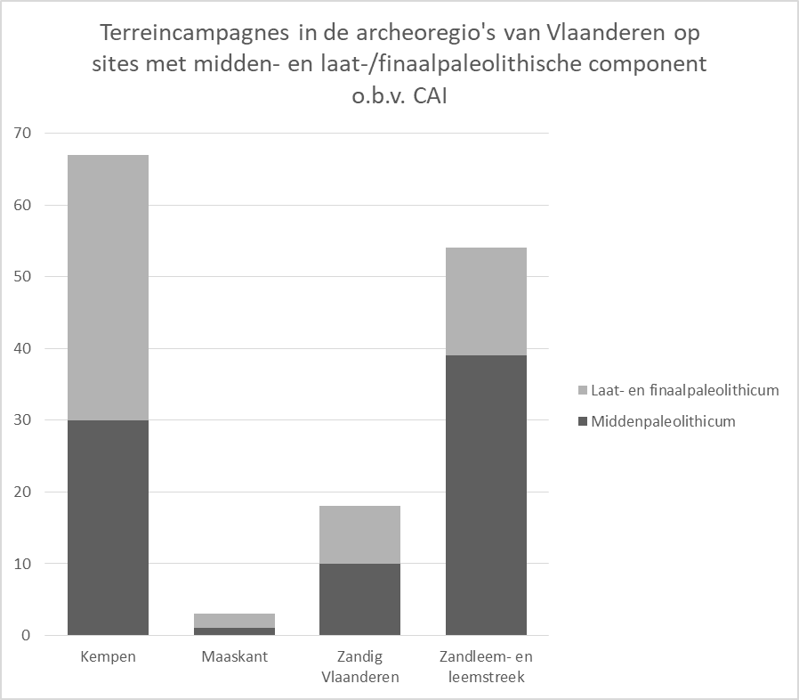
Figuur 37:Terreincampagnes (19792019) in de archeoregio’s in Vlaanderen op sites met middenpaleolithische en laat-/finaalpaleolithische component, gerapporteerd in CAI.
Wanneer we een onderscheid maken tussen eenmalig gerapporteerde en meerjarige terreincampagnes, dan zien we in de Kempen voornamelijk meerjarig onderzoek (op de finaalpaleolithische sites in Meer, Weelde, Zonhoven en Lommel) (Figuur 38). In de overige archeoregio’s overheersen de eenmalig gerapporteerde sites. Toch is er in de (zand)leemstreek ook nog een groot deel meerjarig onderzoek: hier vallen bijvoorbeeld de verschillende middenpaleolithische sites te Veldwezelt en Kesselt onder.
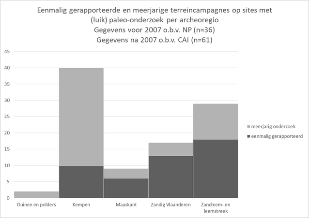
Eenmalig gerapporteerde en meerjarige terreincampagnes (19792020) op sites met een paleolithische component in de verschillende archeoregio’s in Vlaanderen, gerapporteerd in Notae Praehistoricae of CAI.
De evolutie per vijfjaarlijkse interval van het paleolithische terreinonderzoek per archeoregio toont een algemene piek tussen 2010 en 2014 (Figuur 39). Campagnes die in de CAI opgenomen worden eindigen dus niet (meer) automatisch in een bijdrage in de Notae Praehistoricae. Ook zien we hier opnieuw het effect van de opkomst van de privéarcheologie.
Wanneer we op het niveau van de archeoregio’s focussen, dan is er een dominantie in de Kempen in het eerste deel van de jaren 1990 en vooral de jaren 2005-2009 te zien. In de jaarkwintetten nadien wordt wel een daling van het aantal campagnes ingezet, maar er blijft nog steeds een groot aandeel voor Kempens onderzoek. De (zand)leemstreek kende tussen de jaren ’70 en de eeuwwisseling een relatief hoog aantal campagnes, en vanaf 2010 komt het bijna op gelijke voet met de andere archeoregio’s. Voor de Maasvallei is het geleden van de opgravingen in Rekem halverwege de jaren ’80 dat de archeoregio een grote invloed op de grafiek had, maar in het voorbije kwintet 2015-19 is opnieuw een algemene heropleving op te merken. Zandig Vlaanderen begon in de jaren 1990 aan bod te komen, en kende een enorme piek aan terreincampagnes tussen 2010 en 2014. In het laatste afgesloten jaarkwintet (2015-2019) is er een quasi gelijke verdeling tussen de grootste archeoregio’s.
Een blik op de archeoregionale verdeling van de type instellingen die (hoofd)uitvoerder waren van de projecten die zijn gerapporteerd (Figuur 40) lijkt aan te geven dat de privésector in bijna alle archeoregio’s nu een belangrijk deel van het terreinwerk uitvoert. Echter wanneer we dit terugkoppelen met de balans van het terreinonderzoek (zie hoger), blijkt dat dit terreinwerk voornamelijk betrekking heeft op vondsten die als losse vondst of per toeval aan het licht kwamen bij onderzoek naar jongere periodes. Binnen de klassieke instellingen zit de terreinexpertise van de Scheldepolders en Zandig Vlaanderen vooral bij UGent. Vanuit de Sigma-prospecties en –opgravingen was ook het agentschap Onroerend Erfgoed voor de Scheldepolders toonaangevend. In de (zand)leemstreek en de Maasvallei bezit de KULeuven een groot deel terreinexpertise: in de eerstgenoemde regio domineert de KULeuven zelfs nog. Ook intergemeentelijke en stedelijke diensten hebben in Zandig Vlaanderen en de (zand)leemstreek terreinervaring opgebouwd. De invloed van de campagnes door overheidsinstellingen in de archeoregio’s is, met uitzondering van de Kempen, verkleind. In de Kempen wordt de terreinexpertise namelijk nog gedeeld tussen het agentschap Onroerend Erfgoed en KULeuven, en vroeger ook met het Koninklijk Museum voor midden-Afrika in Tervuren.
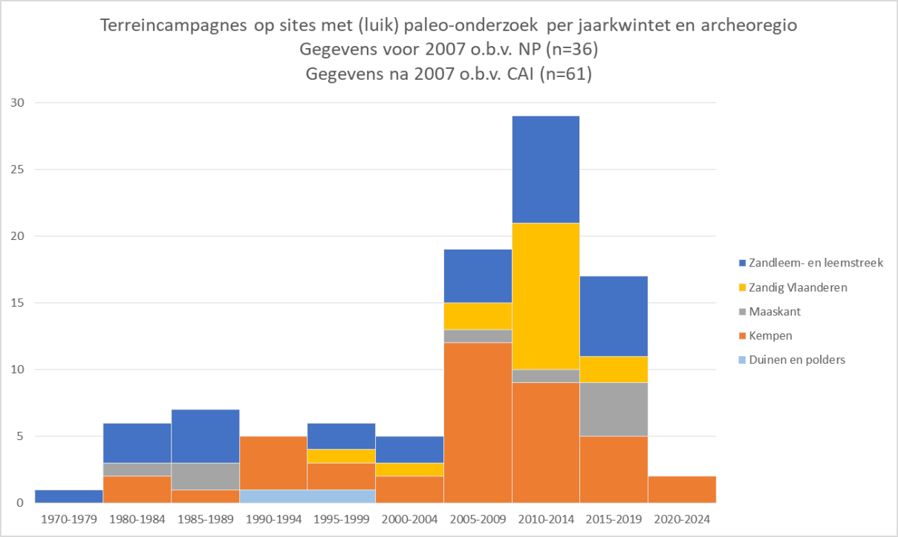
Overzicht per jaarkwintet en archeoregio van de terreincampagnes (1979-2020) op sites met een paleolithische component in Vlaanderen, gerapporteerd in Notae Praehistoricae of CAI.
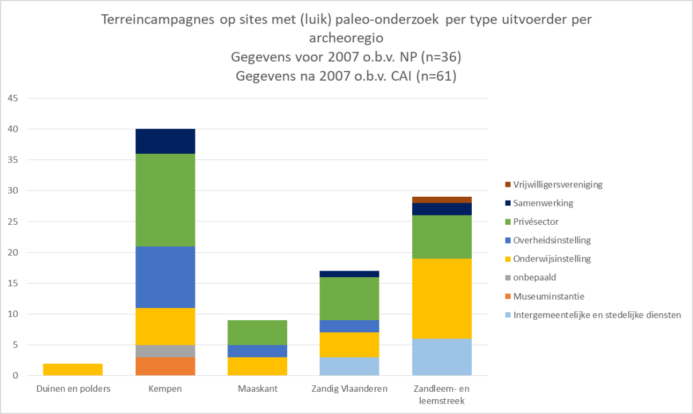
Terreincampagnes (1979-2020) op sites met een paleolithische component in de verschillende archeoregio’s in Vlaanderen, gerapporteerd in Notae Praehistoricae of CAI.
Heyse & Demoulin 2018.↩︎
Van Baelen & Ryssaert 2011.↩︎
Heyse & Demoulin 2018.↩︎
Van Peer & Smith 1990, 157-171; Crombé 1994, 103-130; Van Peer 2001, 11-20.↩︎
Crombé & Van der Haegen 1994b.↩︎
Hameeuw et al. 2012.↩︎
Ryssaert et al. 2010.↩︎
Gierts & Cornelis 2014.↩︎
Crombé & Van der Haegen 1994b. 240 Vynckier et al. 1988.↩︎
Ruebens & Van Peer 2011.↩︎
Van Baelen et al. 2011; Bringmans 2006.↩︎
De Loecker 2005.↩︎
Bosquet et al. 2011.↩︎
Van Dijck & Otte 2019.↩︎
Pieters et al. 2010; Pieters et al. 2020.↩︎
Hublin et al. 2009; Peeters et al. 2009; Peeters et al. 2019.↩︎
Pieters et al. 2020.↩︎
De Bie & Caspar 2000.↩︎
Van Peer et al. 1984, 9-16.↩︎
Van Gils et al. 2009; Vanmontfort et al. 2010.↩︎
Van Gils & De Bie 2003.↩︎
Verbeek 1999.↩︎
Van Noten 1978.↩︎
Van Gils & De Bie 2001, 77-78.↩︎
Van Peer 2007 et al. 2007, 51-59.↩︎
Vanmoerkerke & De Belie 1984, 1-13.↩︎
Crombé et al. 2000, 111-119.↩︎
Ameels & Van Vlaanderen 1995, 35-44; Crombé & Verbruggen 2002, 165-180; Van Vlaenderen et al. 2006; Crombé 2020.↩︎
Crombé 2020.↩︎
Bats et al. 2006; Crombé 2006; Meylemans et al. 2013.↩︎
Crombé et al. 1999a, 71-74; Crombé et al. 2000, 111-119; Perdaen & Ryssaert 2002, 75-81. 263 Perdaen et al. in voorbereiding.↩︎
Crombé et al. 2011.↩︎
Crombé et al. 2013.↩︎
Ryssaert et al. 2010.↩︎
Van Acker 1986, 91-103.↩︎
Crombé et al. 2014.↩︎
Crombé et al. 2018.↩︎
Pieters et al. 2010.↩︎
Peeters et al. 2019.↩︎
De Bie et al. 1992, 11-20.↩︎
Moreau 1986.↩︎
Dijkstra 2007, 16-47.↩︎
Vermeersch et al. 1985, 17-54.↩︎
Vermeersch et al. 1987, 7-56. 277 Rensink 1993.↩︎